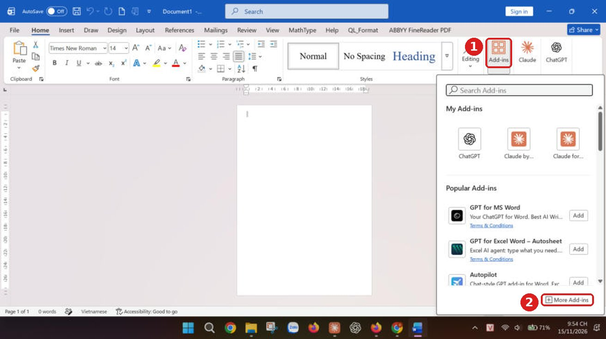
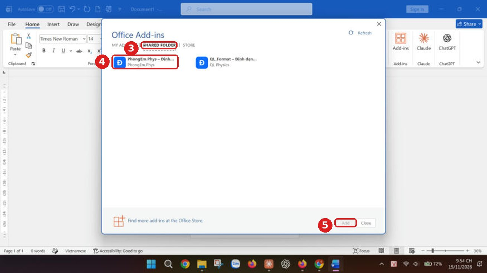
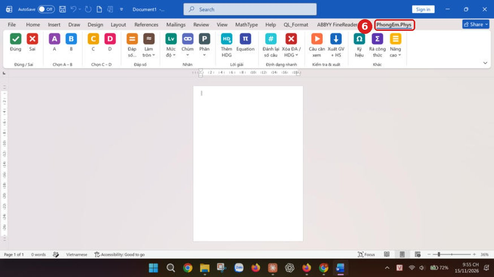

Cài xong PhongEm.Phys: thêm vào Word (làm 1 lần)
Add-in cài qua thư mục dùng chung không tự hiện trên Word. Thầy cô làm 6 bước dưới đây một lần; từ lần mở Word sau, thẻ PhongEm.Phys luôn có sẵn trên thanh Ribbon.
Bộ cài đã chạy xong là phần khó đã xong. Nếu trong khung My Add-ins không thấy PhongEm.Phys thì không phải lỗi cài: add-in nằm ở thẻ SHARED FOLDER như bước 3–5.
1–2Mở hộp Office Add-ins
- Mở Word, mở một file bất kỳ (hoặc file trắng).
- Thẻ Home (Trang đầu) > nút Add-ins (Phần bổ trợ) > bấm More Add-ins (Thêm phần bổ trợ) ở góc dưới khung vừa mở.
Word kiểu cũ: thẻ Insert (Chèn) > My Add-ins (Phần bổ trợ của tôi).

3–5Chọn thẻ SHARED FOLDER rồi thêm
- Trong hộp Office Add-ins, chọn thẻ SHARED FOLDER (THƯ MỤC DÙNG CHUNG).
- Bấm vào PhongEm.Phys.
- Bấm Add (Thêm).

6Thẻ add-in hiện trên Ribbon
Thẻ PhongEm.Phys xuất hiện cạnh các thẻ của Word. Xong — các lần mở Word sau không cần làm lại.

Nếu không giống hình
- Thẻ SHARED FOLDER trống hoặc không có thẻ này: đóng hết Word rồi mở lại; nếu vẫn vậy, chạy lại bộ cài và chọn Yes (Có) khi Windows hỏi quyền.
- Bộ cài báo "KHONG TAO DUOC THU MUC DUNG CHUNG": máy không cho quyền quản trị. Add-in khi đó nằm ở thẻ DEVELOPER ADD-INS trong hộp Office Add-ins (bước 3 chọn thẻ này thay cho SHARED FOLDER) và có thể phải thêm lại mỗi lần mở Word.
- Vẫn chưa được: chạy file KiemTra_AddIn.cmd (chỉ đọc thông tin, không thay đổi gì), gửi file KiemTra_AddIn.txt tạo ra trên Desktop cho thầy Lập.
QL Physics · Tổ Vật lí · Trường THPT Chu Văn An · Trang công cụ